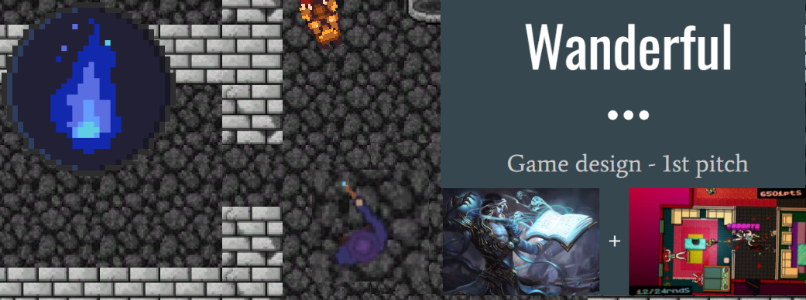

Week 2 - First concept
The second week started off with a group meeting at KTH campus. During this meeting, the group further discussed the idea we had from the first brainstorm but the more we discussed it the more the idea seemed inherently problematic. As these inherent design problems kept stacking up, the group eventually came to a conclusion and agreed that we needed to look into a fundamentally new idea. During the third meeting of the group I brought up one of the suggestions from the initial brainstorm that consisted of making an intense high-octane 2D top down shooter type game in a fantasy setting (think hotline miami with magic). The group started to discuss the idea further and how the concept could be evolved which led to some really interesting directions for how we could design such a game. And so, the idea of the game “Wanderful” was born.
The group held an additional meeting to prepare for the concept presentation but as the idea was still pretty fresh, the presentation was a bit all over the place. Nevertheless, from the presentation we got good feedback and the general idea was well received. Personally during this week I also recreated the initial 2D demo I put together and included a hotline miami type top down camera so that the player could both move and look around freely.